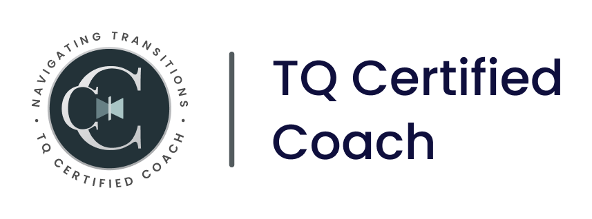

I am a Licensed Independent Clinical Social Worker (LICSW) with over two decades of experience helping individuals navigate life’s complex transitions. I’ve supported people from diverse cultures and backgrounds across a wide range of settings—including hospitals, community mental health, academia, research universities, startups, tech companies, and corporate environments. Beyond my clinical practice, I am an adjunct professor at Boston College, where I help educate and mentor the next generation.
LinkedIn ProfileAs a Taiwanese American daughter of immigrants, I deeply understand that our cultural background, family values, and personal histories are a core part of who we are and how we experience the world. I hold space and affirm your full identity—including your cultural heritage, gender identity, and sexual orientation—ensuring our work together honors every facet of who you are.
I bring a blend of warmth, empathy, and practical resources to our work together. My approach combines evidence-based practices, culturally responsive and trauma-informed care, with the Transitional Intelligence (TQ) framework. I personalize these methods to your unique needs, values, and strengths. Together, we’ll make sense of where you are, identify what you need, and develop practical skills to navigate the season you’re in with greater clarity and confidence.

When I'm not working, I'm always looking to learn, try new things, and stay curious. You might find me capturing what catches my eye with my iPhone, or diving into a book or topic that has caught my attention. I love to travel and enjoy the challenge of travel hacking to find the best deals. I also value connecting with friends and finding communities to engage in meaningful conversation and fun. Above all, my favorite times are those spent with my husband and our three adult children playing and doing nothing. Oh, and fun fact — the photos on this site are my own, taken during my adventures and quiet moments.